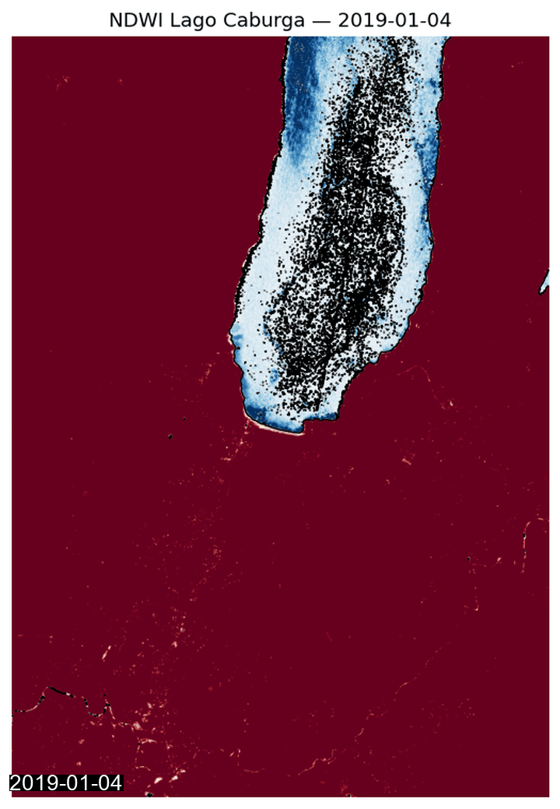
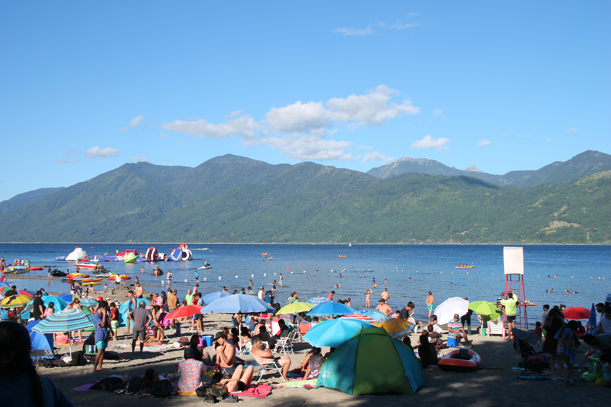
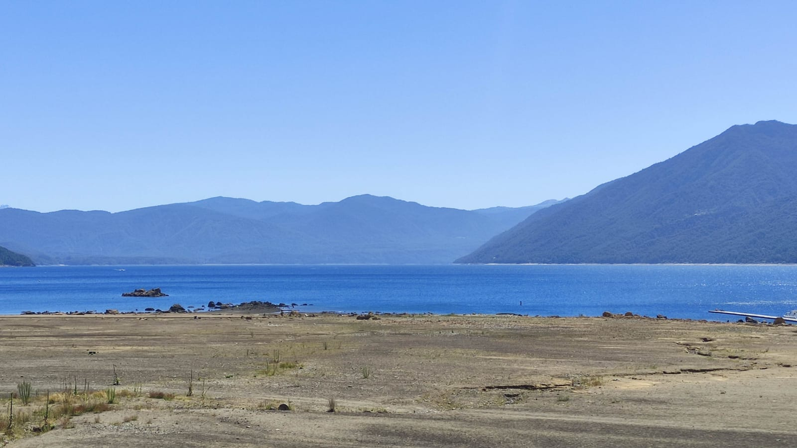
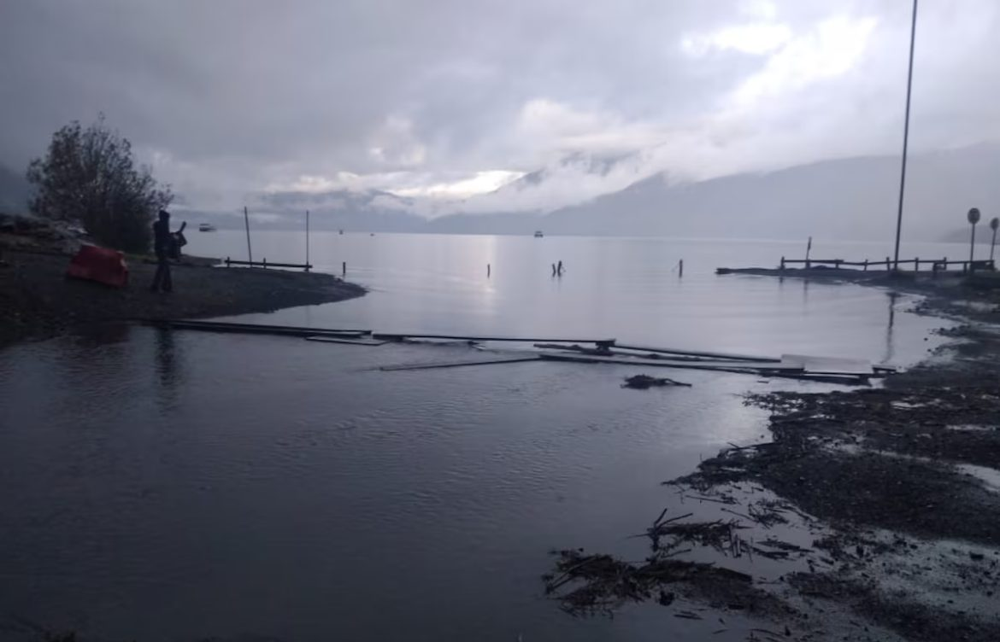
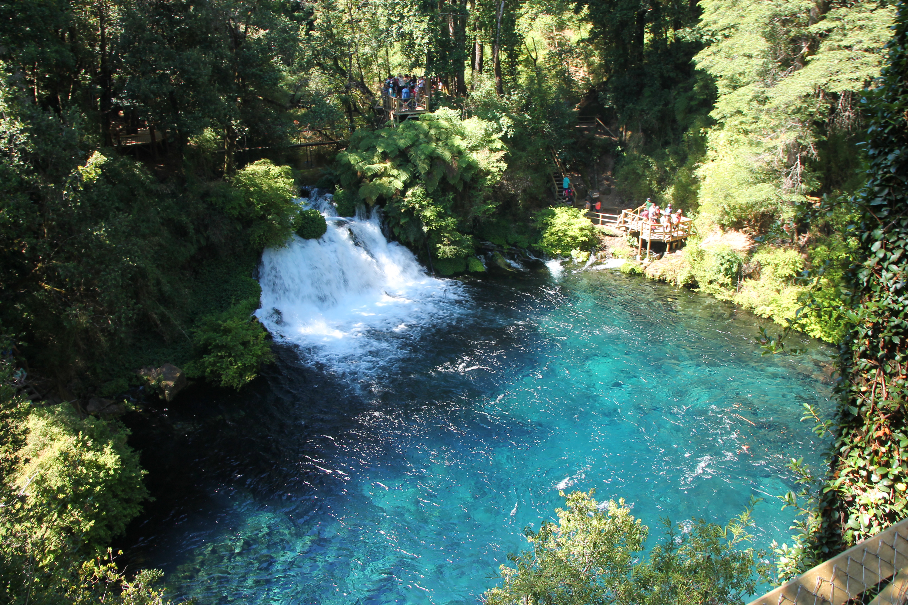
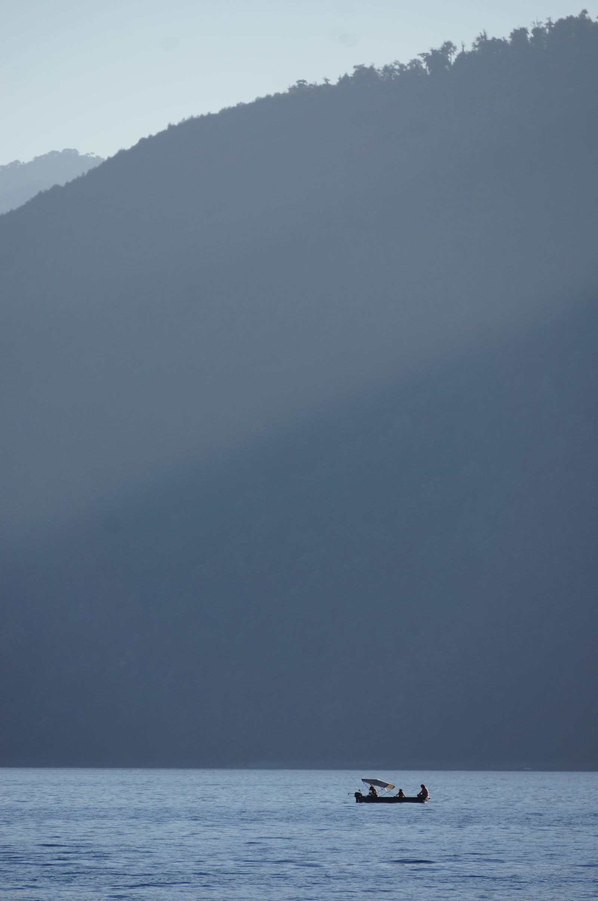
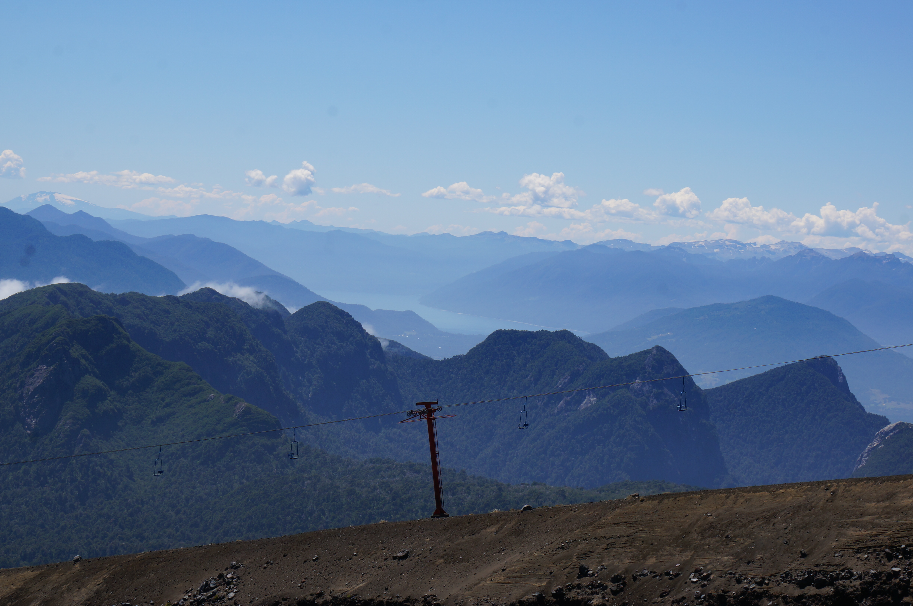

Análisis abierto del descenso del nivel del lago y la polémica del río Trafampulli.
Datos, estudios y balance hídrico — sin trincheras.
📖 Estudio 💡 Propuesta de solución 🚁 Recorrido 3D 💧 Nivel 3D 📊 Explorador 🛰 Comparador 🏔 Mapa 3D 📄 PDF 🌐 English
Explora el balance hídrico del lago con sliders para precipitación, aporte del Trafampulli y drenaje subterráneo.
Cómo ejecutarlo →Cronología completa con personajes, fallos judiciales, estudios técnicos y el conflicto semántico Trafampulli vs La Cascada.
Leer →Inventario del ecosistema chileno: CR2, DGA SNIA, DMC, Open-Meteo (ERA5), CAMELS-CL, Vigilantes Lagos. URLs directas y acceso.
Ver →Mono Lake, Aculeo, Urmia, Aral, Poopó. Cómo otros lugares destrabaron el mismo conflicto entre sequía e intervención humana.
Leer →Script reproducible que descarga imágenes Sentinel-2, calcula NDWI y mide la superficie del lago en el tiempo.
Código →Guion de 4 actos × 5 minutos para producción didáctica con Claude Design o Remotion. Audiencia general.
Leer guion →32 imágenes Wikimedia (CC), 11 videos YouTube relevantes, 5 fuentes prensa, satelital. Todo licenciado.
Catálogo →Imágenes Sentinel-2 procesadas con NDWI (índice de agua). Los píxeles azules corresponden al espejo del lago. Generado con scripts/sentinel2_caburga.py.






